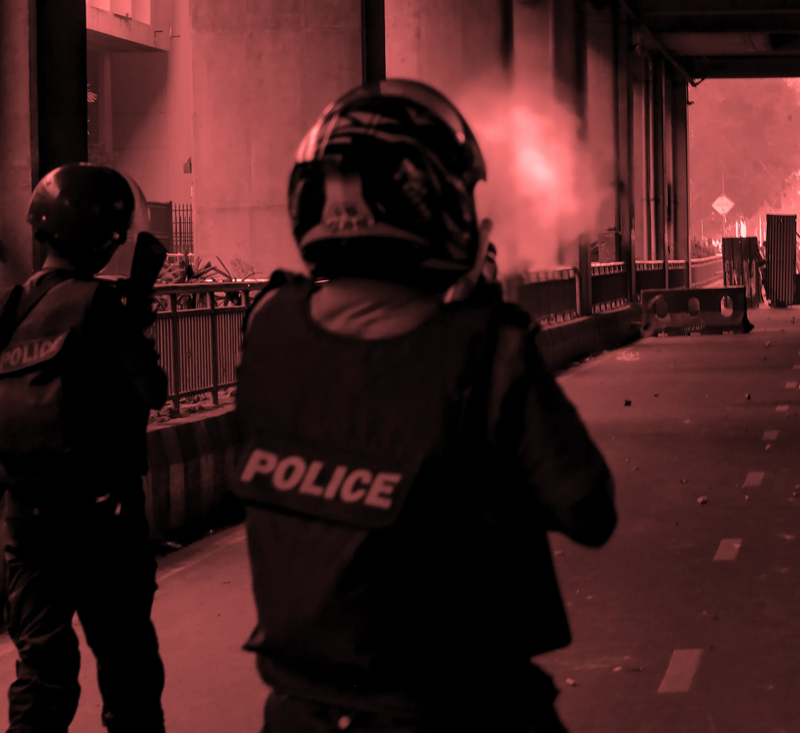
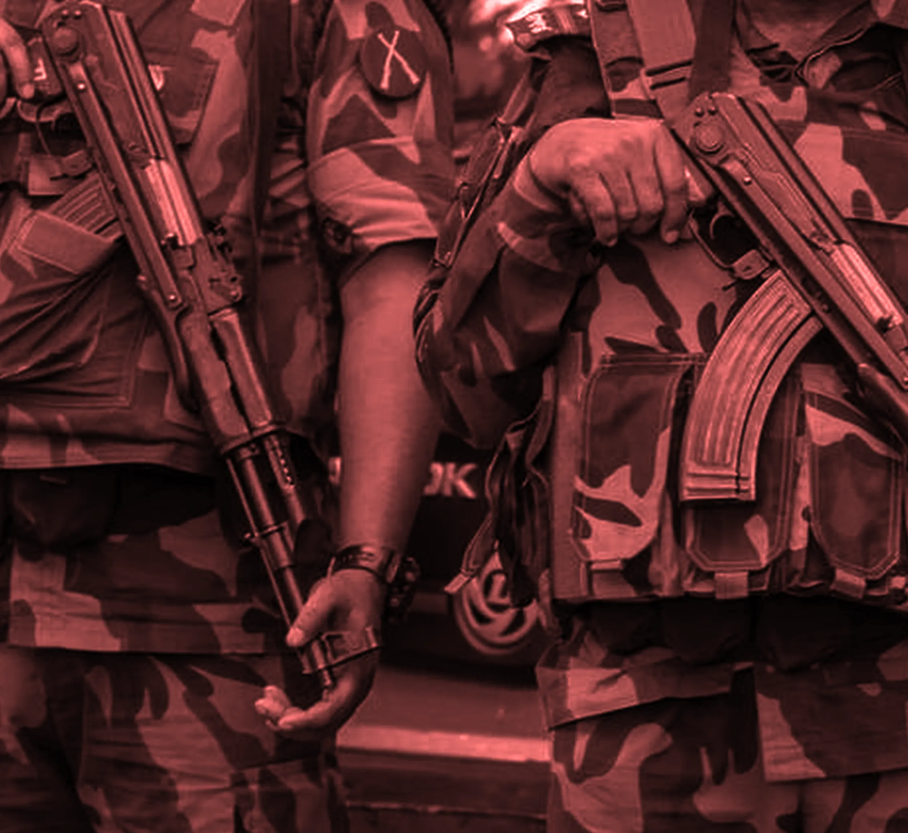
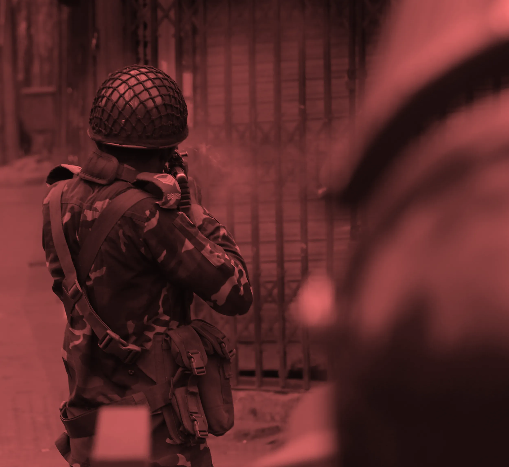

জুলাই-আগস্টে সরকারবিরোধী বিক্ষোভে নিহত কয়েকশ’ জনের পরিবারের সাক্ষাৎকার ও দুই হাজারেরও বেশি সংবাদ
প্রতিবেদন বিশ্লেষণ করে গণ-অভ্যুত্থানে চালানো হত্যাযজ্ঞের একটি চিত্র দাঁড় করিয়েছে নেত্র নিউজ।
রামপুরায় ইস্ট ওয়েস্ট বিশ্ববিদ্যালয়ের ঠিক পেছনেই রয়েছে একটি মাছ বাজার।
বাজারের সরু
গলি দিয়ে আতঙ্ক নিয়ে ছুটছিলেন দুইজন বোরখা-পরা নারী। রামপুরার মতো ঢাকার যেসব এলাকায় অনেক প্রাইভেট
বিশ্ববিদ্যালয় আছে, ওই জায়গাগুলো গত বছরের ছাত্র আন্দোলনের সময় পরিণত হয়েছিল সংঘাতের ময়দানে। একদিকে
ছিলেন বিক্ষোভকারীরা, আর অন্যদিকে ছিল সশস্ত্র
পুলিশ ও সরকার-সমর্থক ক্যাডারদের অবস্থান।
এর কিছুক্ষণ আগে, অর্থাৎ ১৮ জুলাই জোহরের আজানের পরপরই সেলিনা তার মেয়েকে নিয়ে বাসা থেকে দৌড়ে বেরিয়ে
পড়েন। তার ছেলে সেলিমের ফোন থেকে কল এসেছিল; কিন্তু ফোনের অপরপ্রান্তের ব্যক্তিটি ছিলেন অন্য কেউ।
“বলতেছে আপনার ছেলে গুলিবিদ্ধ, আপনি ফরাজী হাসপাতালে আসেন,” সম্প্রতি দেয়া এক সাক্ষাৎকারে বলেন
সেলিনা।
এই কথা শুনেই ছুটতে শুরু করেন তিনি ও তার মেয়ে। কিন্তু বনশ্রীর ফারাজী হাসপাতালে পৌঁছে ছেলেকে তিনি
পেলেন না। “ডাক্তার বলতেছে, এই রোগীর তো ক্রিটিকাল সমস্যা। অনেক গুলি লাগছে। এরে আমরা হাত দেই নাই। এরে
আমরা পাঠায়ে দিছি সরকারি হাসপাতালে।”
তিনি ধারণা করলেন, সেটা মুগদা হাসপাতালই হবে। সেখানেই গিয়ে দেখেন, তার সন্তান সেলিম অজ্ঞান অবস্থায়
পড়ে আছে।
শরীর খিঁচুনিতে কাঁপছে, যেন পানির উপরে উঠে আসা একটা মাছ। তার বুক ও মাথাসহ শরীরের ওপরের অংশে
৭৫টি ছররা গুলির ক্ষত ছিল।
সেলিমকে চিকিৎসার জন্য বিভিন্ন প্রাইভেট হাসপাতালে নিয়ে যাওয়া হয়। বারো দিন ধরে সেলিম ঢাকার একটি
প্রাইভেট হাসপাতালের আইসিইউতে মৃত্যুর সঙ্গে লড়াই করেছিলেন। তাকে সেখানে ভর্তি করাতে হলফনামা দিতে
হয়েছিল সেলিনাকে, যাতে লেখা ছিল, সেলিম ছাত্র আন্দোলনে অংশ নেয়নি। কিন্তু তাতেও
শেষ রক্ষা হয়নি। বারো দিন পর মৃত্যুর সঙ্গে পাঞ্জা লড়ে মারা যায় তার একমাত্র ছেলে।
মো. সেলিম তালুকদারকে পুলিশ খুব কাছ থেকে গুলি করে হত্যা করেছিল। তিন সপ্তাহব্যাপী হত্যাযজ্ঞে নিহত শত শত
মানুষের একজন ছিলেন তিনি।
আন্দোলন শুরু হয়েছিল কোটাভিত্তিক সরকারি চাকরি নিয়োগ প্রক্রিয়ার বিরুদ্ধে। তৎকালীন প্রধানমন্ত্রী
শেখ হাসিনার সরকার আন্দোলন দমনে নিষ্ঠুর বলপ্রয়োগ শুরু করলে এটি রূপ নেয় রক্তক্ষয়ী সরকারবিরোধী
আন্দোলনে।
আন্দোলন চূড়ান্ত পর্যায়ে পৌঁছালে ৫ আগস্ট হাসিনা ভারতে পালিয়ে যান। তার স্থলে দায়িত্ব নেয় একটি
অন্তর্বর্তীকালীন সরকার।
ডিসেম্বরে সরকার নিহতদের তালিকা সম্বলিত একটি গেজেট প্রকাশ করে, যেখানে ৮৩৪ জনকে ‘শহীদ’
হিসেবে তালিকাভুক্ত করা হয়।
তবে সেই তালিকায় অনেক গরমিলও ছিল।
আন্দোলনে হতাহতরা কারা ছিলেন, কীভাবে তারা নিহত হয়েছেন, তা জানতে ছয় মাস ধরে অনুসন্ধান চালায় নেত্র
নিউজ। এই গবেষণার অংশ হিসেবে ৬৫০ জনেরও বেশি ভুক্তভোগী পরিবারের সঙ্গে আমরা কথা বলেছি। নেয়া হয়েছে
স্থানীয়
আন্দোলনকারীদের সাক্ষাৎকার। এছাড়া দুই হাজারেরও বেশি সংবাদ প্রতিবেদন পর্যালোচনা করেছেন গবেষকরা। এই
প্রকল্পের
লক্ষ্য ছিল কোন এলাকায় কত মানুষের মৃত্যু হয়েছে তা চিহ্নিত করা, সম্ভাব্য দায়ীদের শনাক্ত করা, কোন
নিরাপত্তা কর্মকর্তারা দায়িত্বে ছিলেন তা যাচাই করা এবং রাষ্ট্রীয় সহিংসতার প্যাটার্ন অর্থাৎ
প্রকৃতি বোঝার চেষ্টা করা।
নেত্র নিউজ স্বতন্ত্রভাবে ৭৫০টি মৃত্যুর তথ্য যাচাই ও সমন্বয় করতে সক্ষম হয়েছে। আমাদের বিশ্লেষণে দেখা
যায়,
অন্তত ৭০৫ জন সরাসরি নিরাপত্তা বাহিনী অথবা আওয়ামী লীগ-সংশ্লিষ্ট ক্যাডারদের হাতে নিহত হয়েছেন।
তবে এর মানে এই নয় যে, সরকারি গেজেটে তালিকাভুক্ত বাকি লোকজন একই সহিংসতার শিকার হননি। কিছু
ক্ষেত্রে, নেত্র নিউজ নিশ্চিত হতে পারেনি মৃত্যু কীভাবে ঘটেছে। কিছু বিবরণ অস্পষ্ট বা পরস্পরবিরোধী ছিল।
সেসব ক্ষেত্রে সম্পূর্ণভাবে নিশ্চিত হওয়া যায়নি হত্যাকারী কে বা কারা ছিল। তাই তাদেরকে নেত্র নিউজের
তালিকায় রাখা হয়নি।
মেডিকেল আইডি ↑↓
নিহতের নাম ↑↓
অঞ্চল ↑↓
অভিযুক্ত দায়ী ↑↓
< 123 … 1112 >
আগে গুলি, পরে অন্য কথা
ভুক্তভোগীদের পরিবারের সাক্ষাৎকার ও সংবাদ প্রতিবেদন বিশ্লেষণ করে দেখা যায়, এই নিহত ৭০৫ জনের অর্ধেকই
আন্দোলনে সরাসরি অংশ নেননি। তারা ছিলেন পথচারী, দর্শক কিংবা শেখ হাসিনার পতনের খবরে বিজয় মিছিলে যোগ
দিতে আসা লোকজন। আবার কেউ কেউ বাড়ি ফিরছিলেন, কেউ খাবার কিনতে
গিয়েছিলেন, কেউ কাজে যাচ্ছিলেন, এমনকি কেউ কেউ নিজেদের বাসার ছাদ, বারান্দা বা ঘরের ভেতরেও গুলিবিদ্ধ
হন।
এ থেকে ইঙ্গিত মেলে যে, নিরাপত্তা বাহিনী বা সরকার-সমর্থক ক্যাডাররা আন্দোলনকারী আর সাধারণ মানুষের মধ্যে
কোনো বাছবিচার করেনি।
আন্তর্জাতিক শীর্ষ মানবাধিকার সংগঠন হিউম্যান রাইটস ওয়াচ তাদের প্রতিবেদনে
বলেছে, পথচারী ও উৎসুক দর্শনার্থী মানুষের উপর এভাবে হামলা একটি বৃহত্তর প্যাটার্নের অংশ বলে মনে হয়েছে।
পুলিশের একজন কর্মকর্তা পরবর্তীতে সংস্থাটিকে বলেছেন, “বাড়ির ভেতর থেকে বাইরের দিকে তাকিয়ে থাকা
লোকজনদের উপরও গুলি চালিয়েছে পুলিশ। উদ্দেশ্য ছিল আতঙ্ক তৈরি করা ও বার্তা দেয়া যেন তারা বাইরের ঘটনাবলী
পর্যবেক্ষণ না করে।”
নেত্র নিউজের বিশ্লেষণে আরও দেখা যায়, নিরাপত্তা বাহিনী বা আওয়ামী লীগ সংশ্লিষ্টদের হাতে নিহতদের মধ্যে
৯৭.১৬ শতাংশের
মৃত্যুই ঘটেছে গুলিবিদ্ধ হয়ে।
সহিংসতার টাইমলাইন: মৃত্যুর দিনওয়ারি বিবরণ
১৬ জুলাই থেকে ৫ আগস্ট পর্যন্ত সহিংসতার বিভিন্ন পর্ব
৭০৫ জনের
মৃত্যু নিশ্চিত করা গেছে
৬৮৫ জন
মারা গেছেন গুলিবিদ্ধ হয়ে
২৬৭ জন
কেবল ৫ আগস্ট প্রাণঘাতী জখমের শিকার হয়েছেন
পরিবার ও
সংবাদসূত্র মতে, কারফিউ চলাকালে ২০ থেকে ২২ জুলাইয়ের মধ্যে নিহতদের সবাই গুলিবিদ্ধ হয়েছিলেন। এ থেকে
ইঙ্গিত মিলে যে, কারফিউ প্রয়োগকারী বাহিনী খোলাখুলি গুলি চালিয়েছে। একই ধারা চলে
সরকারের শেষ দুই দিন, অর্থাৎ— ৪ ও ৫ আগস্টেও।
অল্প কিছু মানুষ আওয়ামী লীগ-সংশ্লিষ্ট ক্যাডারদের হাতে মার খেয়ে কিংবা ছুরির আঘাতে মারা যান। শেরপুরে
এক নির্বাহী ম্যাজিস্ট্রেটের গাড়িচাপায় দু’জন নিহত হন, মাদারীপুর ও সিলেটে দু’জনকে পানিতে
ডুবিয়ে মারা হয়। বাকি সকলেই গুলিতে নিহত হন।
নিহতদের মধ্যে কমপক্ষে ২৭২ জন বিক্ষোভে সক্রিয়ভাবে অংশ নিয়েছিলেন। তাদের পরিবার ও সংবাদ প্রতিবেদন
থেকে এই তথ্য পাওয়া যায়। অধিকাংশ নিহতই ছিলেন তরুণ। জেনারেশন জেড (১৯৯৭ থেকে ২০১২ সালে জন্ম নেওয়া
ব্যক্তিরা) শুধু আন্দোলনের নেতৃত্বই দেয়নি, বরং হতাহতদের সংখ্যায়ও তাদের আধিক্য ছিল। আমাদের
বিশ্লেষণ অনুযায়ী, নিহতদের ৬১.৩১ শতাংশ ছিলেন জেনারেশন জেড, এরপর ছিল মিলেনিয়াল প্রজন্ম (২৯.১৬%)।
নিহতদের মধ্যে সর্বকনিষ্ঠ ছিল চার বছর বয়সী একজন শিশু, আর সবচেয়ে প্রবীণ ছিলেন সত্তরের কোঠায় থাকা এক
ব্যক্তি
হত্যাকাণ্ডের এলাকা
জুলাই মাসের হত্যাযজ্ঞের সময়, বাংলাদেশের রাজধানী ঢাকায় সবচেয়ে বেশি মানুষ হত্যার শিকার হয়—
অন্তত
৪৭৯ জন। এরপর গাজীপুর, নারায়ণগঞ্জ ও নরসিংদী।
ঢাকায় সবচেয়ে বেশি মানুষ মারা যায় ওয়ারি এলাকায়। এরপর উত্তরা, মিরপুর ও গুলশানের স্থান। ওয়ারি
এলাকার অধীনে যাত্রাবাড়ী ও কদমতলী থানা পড়েছে। এসব থানার পুলিশের বিরুদ্ধে ১০৭ জনকে হত্যার
অভিযোগ রয়েছে।
ঢাকা শহরে সহিংসতার ভৌগলিক বিন্যাস
ঢাকা শহরজুড়ে জুলাই হত্যাযজ্ঞে নিহতদের এলাকাভিত্তিক সংখ্যা
১৯, ২০ জুলাই এবং ৫ আগস্টে সহিংসতা ছিল সবচেয়ে ভয়াবহ।
আমাদের বিশ্লেষণ অনুযায়ী, জুলাইয়ের তৃতীয় সপ্তাহে অন্তত ৩২৫ জন নিহত হন, যখন আইনশৃঙ্খলা বাহিনী ও
আওয়ামী লীগ বিক্ষোভ-দমনে মাঠে নামে। ১৮ জুলাই সহিংসতা বেড়ে যায়। তখন ৫৩ জন মারাত্মক আহত হন
এবং পরদিন এই সংখ্যা তিনগুণ হয়ে যায়।
১৯ জুলাই সন্ধ্যায়, প্রায় একশো মানুষের মৃত্যু এবং আরও কয়েক ডজন গুরুতর আহত হওয়ার পর সরকার
২০ জুলাই মধ্যরাত থেকে কারফিউ ও ‘দেখা মাত্র গুলি’র নির্দেশ জারি করে। পরবর্তী কয়েকদিনে
গুলিতে আহতের সংখ্যা কিছুটা কমে। তবে ৪ আগস্ট তা আবারও বেড়ে যায়। তখন আওয়ামী লীগের সশস্ত্র ক্যাডাররা
সক্রিয় হয়। ওই সময় আওয়ামী লীগের দলীয় নেতাকর্মীদেরকে প্রত্যেক ওয়ার্ড, জেলা ও শহরে জড়ো হওয়ার
নির্দেশ দেওয়া
হয়েছিল।
📅 ১৬ জুলাই: ছাত্র ও যুবলীগের হামলায় আবু সাঈদসহ
পাঁচজন নিহত
📅 ১৭ জুলাই: পুলিশের নিপীড়নে যাত্রাবাড়ীতে
মৃত্যু, বিক্ষোভকারীদের পাল্টা আক্রমণ
📅 ১৮ জুলাই: বেসরকারি বিশ্ববিদ্যালয়ের
শিক্ষার্থীদের রাস্তায় নেমে প্রতিবাদ, সহিংস দমনাভিযান শুরু
📅 ১৯ জুলাই: ঢাকা ও অন্যান্য জেলায় হত্যাযজ্ঞ,
সরকারের সেনা-কায়দায় দমন পদ্ধতি গ্রহণ
📅 ২০ জুলাই: বড় শহরগুলোতে কারফিউ জারি
📅 ২১ জুলাই: কারফিউ ভেঙে প্রতিবাদ করলে গুলি করে
হত্যা, গ্রেফতার বৃদ্ধি
📅 ২২ জুলাই: গণমাধ্যমে নিহতের সংখ্যা প্রকাশিত
হয়, সহিংসতা কিছুটা কমে
📅 ২ আগস্ট: পরিস্থিতি টানটান, বিচ্ছিন্ন সংঘর্ষে
প্রাণহানি
📅 ৩ আগস্ট: রাস্তায় সংঘর্ষ চলমান, মানবাধিকার
সংস্থার তদন্ত দাবি
📅 ৪ আগস্ট: আওয়ামী লীগের সশস্ত্র ক্যাডাররা
যুক্ত হলে একদিনেই ১০০+ নিহত
📅 ৫ আগস্ট: হাজার হাজার মানুষ ঢাকার দিকে রওনা
দিলে পুলিশ গুলি চালায়, শত শত নিহত; সরকারের পতন ঘটে
সে দিনের অনেক ছবি ও ভিডিওতে দেখা যায় আওয়ামী লীগের সদস্যরা আগ্নেয়াস্ত্র, ধারালো চাপাতি ও ভোঁতা
অস্ত্র নিয়ে রাস্তায় মিছিল করছে। নিহতদের মধ্যে অন্তত ৮৬ জন আওয়ামী লীগ ক্যাডার বা দল-সমর্থিত
সশস্ত্র
বাহিনীর হাতে মারা যায়।
৫ আগস্ট কমপক্ষে ২৬৭ জন মারাত্মক আহত হন। অনেকে সেদিনই মারা যান, আবার অনেকে সেদিনের আঘাত বয়ে নিয়ে পরে
মারা যান।
সহিংসতার মাধ্যম
মারধোরে নিহত ১.১৩%;
গুলিবিদ্ধ হয়ে নিহত ৯৭.১৬%;
অন্যান্য কারণে নিহত ০.৮৫%;
ছুরিকাঘাতে নিহত ০.৮৫%
৬৮৫
গুলিবিদ্ধ
০৬
ছুরিকাঘাতের শিকার
০৮
মারধোর
০৬
অন্যান্য কারণ
মুখ্য ফলাফল
ভুক্তভোগীদের ৯৭.১৬% গুলিবিদ্ধ হয়ে নিহত হয়েছেন, যা আগ্নেয়াস্ত্রের ব্যাপক ব্যবহারের
ইঙ্গিত দেয়।
কারফিউ চলাকালীন (২০–২২ জুলাই) ভুক্তভোগীদের সকলেই গুলিবিদ্ধ হন।
প্রাথমিক সংঘাত বৃদ্ধির পর্যায়ে শারীরিক সহিংসতা (ছুরিকাঘাত, প্রহার) সর্বোচ্চ
পর্যায়ে পৌঁছেছিল।
ঢাকার মূল প্রবেশপথগুলোতে প্রাণঘাতী অস্ত্র ব্যাপকভাবে ব্যবহার করা হয়েছে।
‘কোর কমিটি’র অনুমোদনে হত্যাযজ্ঞ
জাতিসংঘের মানবাধিকার হাই-কমিশনারের কার্যালয় (ওএইচসিআর) ২০২৫ সালের ফেব্রুয়ারিতে প্রকাশিত প্রতিবেদনে
বলা হয়েছে, আইন-শৃঙ্খলা রক্ষাকারী
বাহিনী ও গোয়েন্দা সংস্থার প্রধানদের নিয়ে গঠিত ‘কোর কমিটি’ এই হত্যাযজ্ঞ অনুমোদনের
নেপথ্যে ছিল।
কমিটির প্রধান ছিলেন তৎকালীন স্বরাষ্ট্রমন্ত্রী আসাদুজ্জামান খান কামাল।
১৮ জুলাই কোর কমিটি প্রথম বৈঠক করে এবং সামরিক অস্ত্রধারী বিজিবিকে মাঠে নামানোর সিদ্ধান্ত নেয়, যারা
বিক্ষোভকারীদের উপর
যুদ্ধে ব্যবহৃত সামরিক অস্ত্র প্রয়োগ করে। ওয়ারি ও নারায়ণগঞ্জসহ বিভিন্ন এলাকার ব্যাপক
হত্যাকাণ্ডের পেছনে তৎকালীন আওয়ামী সরকারের নেওয়া এই সিদ্ধান্ত গুরুত্বপূর্ণ ভূমিকা রাখে।
ওএইচসিআরের প্রতিবেদন অনুসারে, কামাল আইন-শৃঙ্খলা রক্ষাকারী বাহিনীকে ঢাকা-চট্টগ্রাম মহাসড়ক (N1) থেকে
হাজারো বিক্ষোভকারীকে সরানোর
নির্দেশ দেন। যাত্রাবাড়ী হচ্ছে ঢাকা-চট্টগ্রাম মহাসড়কের প্রবেশপথ এবং এই সড়কটি চিটাগাং রোডের ওপর
দিয়ে গেছে।
আইনশৃঙ্খলা বাহিনী মহাসড়কের এই এলাকা দুটি থেকে তীব্রভাবে আন্দোলনকারীদের সরানোর চেষ্টা করে। ১৯ থেকে ২২
জুলাইয়ের মধ্যে এই এলাকাগুলোতে অন্তত ৭২ জন মারা যান। অনেকে মারাত্মকভাবে আহত হন।
আমাদের বিশ্লেষণে দেখা যায়, নারায়ণগঞ্জে নিহতদের প্রায় সবাই মহাসড়কের পাশের এলাকাতেই গুলিবিদ্ধ হন।
যদিও প্রকৃত সংখ্যা আরও বেশি হতে পারে।
২০২৪ সালের ১৮ জুলাইয়ের কোর কমিটির বৈঠকের পর ঢাকা-চট্টগ্রাম মহাসড়কে ৭০ জনেরও বেশি মানুষ
নিহত হন।
২২ জুলাই যাত্রাবাড়ীতে সফল অভিযান শেষে সেখানে জ্যেষ্ঠ পুলিশ কর্মকর্তাদের ছবি তুলেছে নেত্র নিউজ। এই
কর্মকর্তাদের মধ্যে ছিলেন: আইজিপি চৌধুরী আবদুল্লাহ আল-মামুন, র্যাব মহাপরিচালক হারুন-অর-রশিদ ও
বিশেষ শাখার প্রধান মনিরুল ইসলাম। তারা স্বরাষ্ট্রমন্ত্রী আসাদুজ্জামান কামালের সাথে ১৮ জুলাইয়ের কোর
কমিটির বৈঠকে অংশ নিয়েছিলেন।
কোর কমিটির সদস্যরা হলেন, তৎকালীন পুলিশ মহাপরিদর্শক চৌধুরী আবদুল্লাহ আল-মামুন, বিজিবি মহাপরিচালক মেজর
জেনারেল মোহাম্মদ আশরাফুজ্জামান সিদ্দিকী, র্যাব প্রধান হারুন-অর-রশিদ (যুক্তরাষ্ট্রের
নিষেধাজ্ঞার আওতাধীন), আনসার ও ভিডিপির মহাপরিচালক মেজর জেনারেল এ.কে.এম. আমিনুল হক, ডিজিএফআই প্রধান
মেজর জেনারেল হামিদুল হক, এনএসআই প্রধান মেজর জেনারেল হোসেন আল মোরশেদ, পুলিশের বিশেষ শাখার প্রধান
মনিরুল ইসলাম ও এনটিএমসি প্রধান জিয়াউল আহসান।
জাতিসংঘের প্রতিবেদনে বলা হয়েছে যে, দেশব্যাপী কারফিউ জারির পরপর, অর্থাৎ ২০ জুলাই থেকে বাংলাদেশ
সেনাবাহিনীর একজন জেনারেল কমিটিতে যোগ দেন।
২০২৪ সালের ২২ জুলাই সফল ‘অভিযান’-এর পর যাত্রাবাড়ী এলাকা পরিদর্শনে যান পুলিশের শীর্ষ
কর্মকর্তারা: স্পেশাল ব্রাঞ্চের প্রধান মো. মনিরুল ইসলাম (বামে থেকে দ্বিতীয়), পুলিশ মহাপরিদর্শক
চৌধুরী আবদুল্লাহ আল-মামুন (বামে থেকে তৃতীয়) এবং র্যাবের মহাপরিচালক মো. হারুন আর রশীদ। ছবি: জীবন
আহমেদ, ২২ জুলাই ২০২৪
১৯ জুলাই: বিএনপি ও জামায়াত কর্মীদের প্রবেশ
রাষ্ট্রীয় পৃষ্ঠপোষকতায় সংঘটিত হত্যাযজ্ঞে নিহতদের মধ্যে ১২.২২% ছিলেন বিএনপির সদস্য বা কর্মী, ২.১৩%
ছিলেন জামায়াতের সঙ্গে যুক্ত। তাদের পরিবার ও বিভিন্ন সংবাদমাধ্যেমের প্রতিবেদন থেকে এ তথ্য জানা যায়।
তবে, উভয় দলই দাবি করেছে, প্রকৃত সংখ্যা আরও বেশি।
নিহতদের কোনো
রাজনৈতিক সংগঠনের সঙ্গে সম্পৃক্ততা ছিল কি না তা বোঝার জন্য নেত্র নিউজ পরিবারের সদস্যদের সাক্ষাৎকার
গ্রহণ ও সংবাদ প্রতিবেদন পর্যালোচনা করেছে। আমাদের বিশ্লেষণে দেখা গেছে, নিহতদের
মধ্যে ৮৮ জন ছিলেন বিএনপি বা এর সহযোগী সংগঠনের নেতা-কর্মী এবং ১৫ জন ছিলেন জামায়াত বা এর সহযোগী
সংগঠনের সঙ্গে জড়িত।
তবে, অনেক পরিবার হয়তো তাদের সদস্যদের রাজনৈতিক সম্পৃক্ততা সম্পর্কে জানতেন না, কারণ তারা দূরে বসবাস
করতেন। ফলে এই সংখ্যা হয়তো বাস্তব সংখ্যার চেয়ে কম। এছাড়া নিহতদের অনেকেই হয়তো দল দুটোর সমর্থক, যা
বিশ্লেষণের আওতায় ছিল না।
তবুও, এই পরিসংখ্যান একটি গুরুত্বপূর্ণ ধারা নির্দেশ করে।
আমাদের বিশ্লেষণ অনুযায়ী, ১৬ জুলাই ছাত্রদলের একজন সদস্য নিহত হওয়ার মধ্য দিয়ে আন্দোলনে হতাহতের সূচনা
ঘটলেও, বিএনপি পুরোদমে আন্দোলনে অংশ নেয় ১৯ জুলাই থেকে। কেননা তখন থেকেই দলটি নেতাকর্মী হারাতে থাকে।
শুধু ১৯ জুলাইয়েই তারা ২৫ জন নেতা-কর্মীকে হারায়। এরপর ২০ জুলাই ২ জন এবং
২১ জুলাই আরও ৩ জন নিহত হন।
৪ আগস্ট বিএনপি সবচেয়ে বেশি সক্রিয় ছিল এবং সেদিন নিহতদের প্রায় পাঁচ ভাগের এক ভাগ ছিল বিএনপির।
পরদিনও
৩৪ জন বিএনপি কর্মী নিহত হন।
জামায়াত ১৯ জুলাই তিনজন কর্মী হারায়, যা জুলাইয়ের মধ্যে সর্বোচ্চ। ৫ আগস্ট দলটির ১০জন কর্মী নিহত
হন। গণসংহতি আন্দোলন, গণঅধিকার পরিষদ এবং ইসলামী আন্দোলন বাংলাদেশেরও অন্তত একজন করে সদস্য বিক্ষোভে
নিহত হন।
তবে, এদের সবাই সরাসরি বিক্ষোভে সক্রিয় ছিলেন না। পরিবারের সদস্যদের সাক্ষ্য ও সংবাদ প্রতিবেদন
অনুযায়ী, কেউ কেউ সড়ক পার হওয়ার সময় বা কর্মস্থল থেকে ফেরার পথে নিহত হন।
দায়ী ছিল কারা?
বেশিরভাগ ব্যক্তি দৃশ্যত পুলিশের হাতে প্রাণ হারান। এরপর রয়েছে আওয়ামী লীগের সশস্ত্র
ক্যাডাররা।
নেত্র নিউজ নিহতের পরিবার, প্রত্যক্ষদর্শী ও সংবাদ প্রতিবেদন যাচাই করে দেখতে পায়, অন্তত ৪৬৭ জন
পুলিশের হাতে মারাত্মকভাবে আহত হন। ১৯ জুলাই ও ৫ আগস্ট পুলিশ ছিল সবচেয়ে নির্মম। অন্তত ৬১টি মৃত্যুর
ক্ষেত্রে
পুলিশ ও বিজিবি একসঙ্গে গুলি চালায়। কিন্তু জটিল পরিস্থিতির কারণে কে গুলি করেছে তা নিশ্চিত করা
প্রত্যক্ষদর্শী ও সাংবাদিকদের জন্য অত্যন্ত কঠিন ছিলো।
অনেক সময় প্রত্যক্ষদর্শীরা ‘পুলিশ’ শব্দটি দিয়ে সামগ্রিক নিরাপত্তা বাহিনীকে বোঝাতে পারেন।
আমাদের বিশ্লেষণে আরও জানা গেছে, অন্তত ৪৩ জন সমন্বিতভাবে পুলিশ ও আওয়ামী লীগ কর্মীদের হামলায় নিহত হন
এবং ২৭ জন বিজিবির হাতে নিহত হন। অন্তত দুটি ঘটনায় প্রত্যক্ষদর্শীরা সেনাবাহিনীকে গুলি চালাতে দেখেছেন।
৪৬৭পুলিশ
৮৬আওয়ামী লীগ
৬৩পুলিশ-বিজিবি
৪৩পুলিশ-আঃলীঃ
২৭বিজিবি
১৯অন্যান্য
বিভ্রান্তি নিয়ে কিছু পর্যবেক্ষণ
২০২৫ সালের ১৭ জুন জারি
করা “জুলাই গণঅভ্যুত্থানের শহীদ পরিবার ও আহত ছাত্র-নাগরিক কল্যাণ ও পুনর্বাসন
অধ্যাদেশ, ২০২৫”-এর শহীদের সংজ্ঞা অনুযায়ী, এই বিশ্লেষণে আমরা শুধুমাত্র তাদের অন্তর্ভুক্ত
করেছি যারা নিরাপত্তা বাহিনী এবং আওয়ামী লীগ ক্যাডারদের সহিংসতায় নিহত হয়েছেন। তবে সরকারের
প্রকাশিত তালিকায় নিজস্ব সংজ্ঞা পুরোপুরি মানা হয়নি।
কিছু ক্ষেত্রে, মৃত্যুর পারিপার্শ্বিকতা হত্যাযজ্ঞের শিকার বা শহীদের সংজ্ঞায় পড়ে না।
যেমন, পুলিশ কর্মকর্তাদের নামও তালিকায় পাওয়া গেছে, যারা পরিবার ও সংবাদ প্রতিবেদন
অনুযায়ী, বিক্ষোভকারীদের হাতে নিহত হন। অন্তত একজন নিহত ব্যক্তি ছিলেন যাকে ভুলবশত আওয়ামী লীগ
কর্মী মনে করে বিক্ষোভকারীরা হত্যা করে।
সংবাদ প্রতিবেদন ও সাক্ষাৎকারের মাধ্যমে নেত্র নিউজ ৬ জনের মৃত্যু প্রাকৃতিক কারণে হয়েছে বলে শনাক্ত
করেছে। আরও দুইজন ৬ আগস্ট আহত হয়ে মারা যান; দুইজন জেল ভাঙার চেষ্টা করতে গিয়ে নিহত হন বলে সংবাদে
জানা গেছে।
গবেষণা পদ্ধতি
নেত্র নিউজ সরকার প্রকাশিত গেজেট
থেকে ৮৩৪ জন শহীদের তালিকা সংগ্রহ করে এবং পরিবারের সঙ্গে যোগাযোগ করে তাদের
আঘাতপ্রাপ্ত হওয়ার স্থান, মৃত্যুর কারণ, অভিযুক্ত ব্যক্তি বা বাহিনী, বয়স ও রাজনৈতিক
পরিচয়ের তথ্য সংগ্রহ করে। প্রতিটি তথ্য আমরা অন্তত দুটি জাতীয় বা স্থানীয় সংবাদ
প্রতিবেদনের মাধ্যমে যাচাই করেছি।
৮৩৪ পরিবারের মধ্যে ৬৬৬টি পরিবার আমাদের ফোনে সাড়া দিয়েছে। বাকি পরিবারগুলোর কেউ সাড়া
দেয়নি, কারও ফোন বন্ধ পাওয়া গেছে বা কেউ কথা বললেও তথ্য দিতে অস্বীকৃতি জানিয়েছে।
পরিবারের কাছ থেকে তথ্য পাওয়ার পর, আমরা নিহতদের নাম হত্যাযজ্ঞের সময় ও পরবর্তী সময়ে
প্রকাশিত সংবাদপত্রে খুঁজেছি। আমরা ৭৫০ জনের তথ্য নিশ্চিত করতে পেরেছি, যারা ১৬ জুলাই
থেকে ৫ আগস্টের মধ্যে আহত হয়ে মারা যান।
যাদের পরিবারের সঙ্গে যোগাযোগ করা যায়নি, তাদের তথ্য আমরা অন্তত দুটি সংবাদ প্রতিবেদনের
মাধ্যমে সংগ্রহ করেছি এবং স্থানীয় বিক্ষোভ সংগঠক ও প্রত্যক্ষদর্শীদের সঙ্গে কথা বলে
ঘটনার সত্যতা নিশ্চিত করেছি।
এই ৭৫০ জনের মধ্যে ৭০৫ জন নিরাপত্তা বাহিনী বা আওয়ামী লীগ কর্মীদের সহিংসতায় নিহত
হয়েছেন।
বাকি যাদের তথ্য যাচাই করা গেলেও এই বিশ্লেষণে রাখা হয়নি, তারা প্রধানত শেখ হাসিনা
পালানোর পর বিভিন্ন ঘটনায় নিহত হন। বেশিরভাগই আওয়ামী লীগ নেতাদের মালিকানাধীন বাড়ি
বা হোটেলে পুড়ে মারা যান। এবং অন্তত একজন বিদ্যুৎস্পৃষ্ট হয়ে মারা যান।
বাকি ৮৪ জন নিহতের তথ্য সংগ্রহে নেত্র নিউজ সফল হয়নি, কারণ তাদের মৃত্যু সংবাদপত্রে
সেভাবে উঠে আসেনি, পরিবার তথ্য দেয়নি বা প্রাপ্ত তথ্য থেকে নিশ্চিতভাবে বিশ্লেষণ করা
সম্ভব হয়নি।
২০২৫ সালের ১ জুলাই, অন্তর্বর্তী সরকার শহীদ তালিকায় অতিরিক্ত আরও ১০ জনের নাম
যুক্ত করে।
প্রতিবেদন ও উপাত্ত বিশ্লেষণ করেছেন আকিব মো. সাতিল; এবং নকশা করেছেন সুবিনয় মুস্তফী ইরন।
মারজিয়া হাশমি মমো, মিরাজ হোসেন, মোহাম্মদ নাফিউল ইসলাম, রাফা তানজিম স্নেহা, আরিফ রায়হান,
রুবায়েত আলম এবং তাসনিম বিনতে হক গবেষণায় সহায়তা করেছেন।